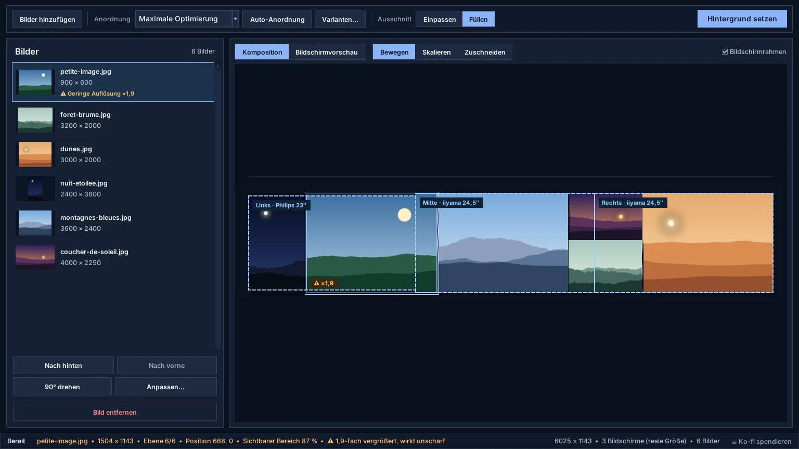
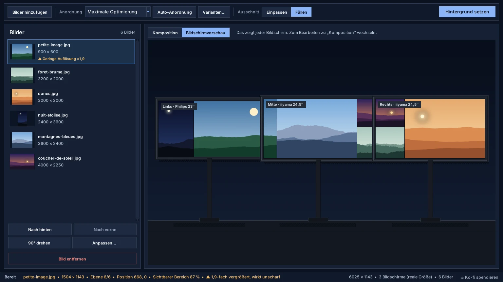
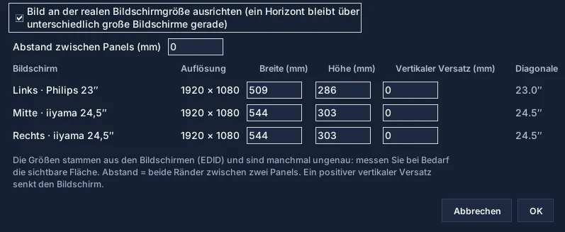

Bilder hinzufügen
Schaltfläche „Bilder hinzufügen“ oder Ziehen und Ablegen. Handyfotos werden aufgerichtet.
Die Oberfläche basiert auf einem einfacheren Zyklus: importieren, platzieren, skalieren, ordnen, prüfen und anwenden.
Vom Fotoordner zum Desktop in fünf Schritten.
Schaltfläche „Bilder hinzufügen“ oder Ziehen und Ablegen. Handyfotos werden aufgerichtet.
Sechs Anordnungen, darunter die maximale Optimierung. Varianten… schlägt vier weitere vor.
Einpassen zeigt jedes Bild vollständig; Füllen bedeckt die Bildschirme und schneidet um Gesichter zu.
Bewegen, Skalieren, Zuschneiden, Ebenen, Drehen und Anpassungen. Strg+Z macht rückgängig.
„Hintergrund setzen“ schneidet die Komposition zu und wendet sie Bildschirm für Bildschirm an.
Vier Bereiche, von oben nach unten und von links nach rechts.
Die Werkzeugleiste enthält, was Sie ständig brauchen; alles andere steht in den Menüs Datei, Bild, Bildschirme und Sprache.

Was jeder Bildschirm zeigen wird, vor dem Anwenden.
Der Reiter Vorschau zeichnet Ihre Bildschirme wie auf dem Schreibtisch, mit Namen: „Links · Philips 23″“, „Mitte · iiyama 24,5″“…

Damit eine Linie über unterschiedlich große Bildschirme gerade bleibt.
Menü Bildschirme › Reale Bildschirmgröße… Kästchen aktivieren: WallCraft platziert die Bildschirme nach ihrer physischen Größe, aus dem Monitor gelesen (EDID).

Lade den aktuellen Build herunter, teste dein Multi-Monitor-Layout und nutze das GitHub-Repository für Updates und Quellcode.